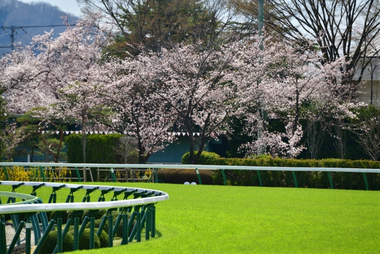

2025年 GIレーススケジュール
| 日付 | G1名 | 競馬場名 | 距離 |
|---|---|---|---|
| 02/23 | フェブラリーステークス | 東京競馬場 | ダート1600m |
| 03/30 | 高松宮記念 | 中京競馬場 | 芝1200m |
| 04/06 | 大阪杯 | 阪神競馬場 | 芝2000m |
| 04/13 | 桜花賞 | 阪神競馬場 | 芝1600m |
| 04/20 | 皐月賞 | 中山競馬場 | 芝2000m |
| 05/04 | 天皇賞（春） | 京都競馬場 | 芝3200m |
| 05/11 | NHKマイルカップ | 東京競馬場 | 芝1600m |
| 05/18 | ヴィクトリアマイル | 東京競馬場 | 芝1600m |
| 05/25 | 優駿牝馬（オークス） | 東京競馬場 | 芝2400m |
| 06/01 | 東京優駿（日本ダービー） | 東京競馬場 | 芝2400m |
| 06/08 | 安田記念 | 東京競馬場 | 芝1600m |
| 06/15 | 宝塚記念 | 阪神競馬場 | 芝2200m |
| 09/28 | スプリンターズステークス | 中山競馬場 | 芝1200m |
| 10/19 | 秋華賞 | 京都競馬場 | 芝2000m |
| 10/26 | 菊花賞 | 京都競馬場 | 芝3000m |
| 11/02 | 天皇賞（秋） | 東京競馬場 | 芝2000m |
| 11/16 | エリザベス女王杯 | 京都競馬場 | 芝2200m |
| 11/23 | マイルチャンピオンシップ | 京都競馬場 | 芝1600m |
| 11/30 | ジャパンカップ | 東京競馬場 | 芝2400m |
| 12/07 | チャンピオンズカップ | 中京競馬場 | ダート1800m |
| 12/14 | 阪神ジュベナイルフィリーズ | 阪神競馬場 | 芝1600m |
| 12/21 | 朝日杯フューチュリティステークス | 阪神競馬場 | 芝1600m |
| 12/27 | ホープフルステークス | 中山競馬場 | 芝2000m |
| 12/28 | 有馬記念 | 中山競馬場 | 芝2500m |
★☆★☆＜＜今週の重賞＞＞★☆★☆
2025年 JRA 騎手リーディング
| 順位 | 騎手名 | 1着 | 2着 | 3着 | 騎乗数 | 勝率 | 連対率 | 複勝率 |
|---|---|---|---|---|---|---|---|---|
| 1 | 戸崎 圭太 | 54 | 39 | 30 | 173 | 18.2% | 31.4% | 41.6% |
| 2 | 丹内 祐次 | 47 | 38 | 41 | 249 | 12.5% | 22.7% | 33.6% |
| 3 | 坂井 瑠星 | 46 | 35 | 28 | 179 | 16.0% | 28.1% | 37.8% |
| 4 | 横山 武史 | 44 | 27 | 33 | 193 | 14.8% | 23.9% | 35.0% |
| 5 | 松山 弘平 | 41 | 37 | 22 | 217 | 12.9% | 24.6% | 31.5% |
| 6 | 岩田 望来 | 41 | 28 | 17 | 186 | 15.1% | 25.4% | 31.6% |
| 7 | C.ルメール | 39 | 28 | 24 | 71 | 24.1% | 41.4% | 56.2% |
| 8 | 川田 将雅 | 38 | 30 | 23 | 88 | 21.2% | 38.0% | 50.8% |
| 9 | 佐々木 大輔 | 35 | 31 | 22 | 262 | 10.0% | 18.9% | 25.1% |
| 10 | 横山 和生 | 32 | 24 | 24 | 170 | 12.8% | 22.4% | 32.0% |
競馬の図書館はこちら